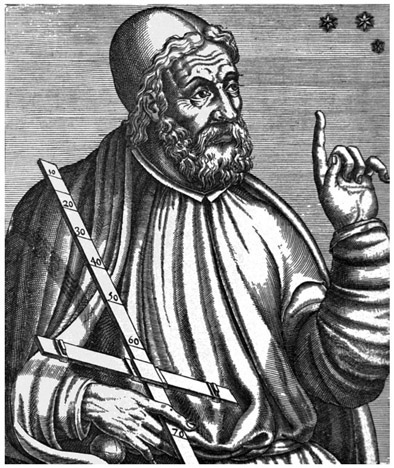
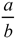
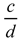
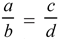
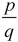
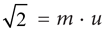
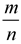

Eudoxus of Cnidus: Greek (390-337 BCE)
For many years it was believed that both Isaac Newton (1642–1726) and Gottfried Wilhelm Leibniz (1646–1716) invented calculus. Newton’s work was called fluxions, and Leibniz’s notation is what is used today in the study of differential and integral calculus. However, research in modern times has shown that the actual “inventor” of what we today call calculus was, in fact, Eudoxus of Cnidus, who was born in Cnidus, Asia Minor, and around 390 BCE. His work, which is today considered the forerunner of calculus was called Method of Exhaustion. Eudoxus is often seen as the greatest of the classical Greek mathematicians, with the possible exception of Archimedes. Unfortunately, all of his written work seems to have been lost over the years; however, his work is cited by many mathematicians who followed him, including Euclid.
Most of what we know about Eudoxus’s life comes from the third-century historian Diogenes Laertius, who wrote a compilation of biographical snippets—along with some gossip—which included Eudoxus among the many other famous philosophers and mathematicians.1 From Laertius, we know that at age twenty-three, while in Athens, Greece, Eudoxus was to have attended lectures at Plato’s Academy. Soon thereafter, he left for Egypt, where he spent sixteen months studying with priests and making astronomical observations from an observatory. In order to support himself, he did some teaching and returned to Asia Minor; later, he returned to Athens, where he worked at the Platonic Academy as a teacher. Eventually, he returned to Cnidus, where he became a legislator and continued doing research. He died in about 337 BCE.

Figure 3.1. Eudoxus of Cnidus.
In Book V of Euclid’s Elements, much of the discussion of proportionality seems to be credited to Eudoxus; however, it is not known to what extent subsequent mathematicians’ work was included in the discussion. During this time, Greek mathematicians measured objects via proportionality, that is, the ratio of two similar items was compared to others in the same way, thereby forming a proportion. This was unlike our modern-day methods of measuring quantities either numerically or through various equations. Eudoxus is credited with giving meaning to the equality of two ratios, or a proportion. Euclid’s Book 5, definition 5, of Elements, which is largely credited to Eudoxus, reads as follows:
Magnitudes are in the same ratio, that is, the first to the second and the third to the fourth when, if any equal multiples are taken of the first and the third, and any equal multiples of the second and fourth, the latter equal multiples exceed, or are equal to, or are less than the latter equal multiples, respectively, taken in corresponding order.
This could be more easily explained symbolically in the following way: Consider the four quantities a, b, c, and d. Now consider the ratios

and
. Let us now consider them equal, so that
. Now we consider two arbitrary numbers, say, p and q, and form multiples of the first and third numbers to get pa and pc. Similarly, we form multiples of the second and fourth numbers to get qb and qd. If pa > qb, then it must follow that pc > qd. On the other hand, if pa = qb, then it must follow that pc = qd. Furthermore, if pa < qb, then it must follow that pc < qd. Bear in mind that these definitions referred to comparing similar quantities, not necessarily similar units of measure. Most important, Eudoxus’s definition does not require a, b, c, and d to be rational numbers; his definition of equality of two ratios also works for irrational numbers.Furthermore, Pythagoreans had discovered that there exist numbers that cannot be expressed as a ratio,

, where p and q are integers. Their method of comparing two lengths a and b was to find a length u so that a = p∙u and b = q∙u for whole numbers p and q. It had been thought that for any two lengths a and b there always exists some sufficiently small unit u that could fit evenly into one of these lengths as well as the other. However, the Pythagoreans were upset when they found out that such a common unit of measure does not always exist; not all lengths can be compared or measured in this way. For example, the length of the hypotenuse of an isosceles right triangle with legs of length 1 is incommensurable with its legs, meaning that there exists no unit of measure u that would fit evenly into both the hypotenuse and the leg. By the Pythagorean theorem, the length of the hypotenuse of this triangle is . Saying that this number is incommensurable with 1 means that it is impossible to have
. Saying that this number is incommensurable with 1 means that it is impossible to have 
and 1 = n ∙ u with the same number u in both equations and with both m and n whole numbers; that is, and 1 cannot be expressed as multiples of a common unit of measure. In other words,
and 1 cannot be expressed as multiples of a common unit of measure. In other words,  cannot be written as a ratio of whole numbers,
cannot be written as a ratio of whole numbers, 
; therefore, it is not a rational number—it is irrational.As mentioned above, Eudoxus’s method of comparing ratios allows us to compare or measure irrational numbers; in this sense, he was the first who made irrational numbers measurable. In fact, the German mathematician Richard Dedekind (1831–1916) emphasized in his writings that he was inspired by the ideas of Eudoxus when he developed the notion known as a Dedekind cut, which is now a standard definition of the real numbers. The idea of a Dedekind cut is that an irrational number divides the rational numbers into two classes, or sets, with all the numbers of one (greater) class being strictly greater than all the numbers of the other (lesser) class. For example,  divides into the lesser class all the negative numbers and the numbers the squares of which are less than 2; divided into the greater class, then, are the positive numbers the squares of which are greater than 2.
divides into the lesser class all the negative numbers and the numbers the squares of which are less than 2; divided into the greater class, then, are the positive numbers the squares of which are greater than 2.
Beyond rendering irrational numbers measureable, as indicated earlier, Eudoxus is also credited with having developed the method of exhaustion. Exhaustion is a process for finding the area of the shape by inscribing within it a series of polygons—with ever-increasing number of sides—whose areas eventually converge to the area of the original figure. When constructed directly, the difference in area between the nth polygon and the original shape being measured will become smaller as n becomes larger. As this difference becomes arbitrarily small, the area of the original shape is eventually “exhausted” by the lower-bound areas, successively established by the sequence members. Again, the method of exhaustion preceded integral calculus. It did not use limits, nor did it use infinitesimal quantity. It was merely a logical procedure based on the idea that a given quantity can be made smaller than another given quantity by continuously halving it a finite number of times. One example of this would be to show that the area of a circle is proportional to the square of its radius.
Although the true study of calculus originated through the writings of Isaac Newton and Gottfried Wilhelm Leibniz, we must credit Eudoxus for having established with the method of exhaustion a forerunner of today’s calculus. Understanding Eudoxus’s contributions to the mathematics we know and use today grants us a true appreciation not only for his individual forethought and inventiveness but also for how all learning is cumulative. The vast and astounding achievements we take for granted today would be impossible or nonexistent without the work and brilliance of those who preceded us and provided a foundation upon which we and our more recent forebears could build.